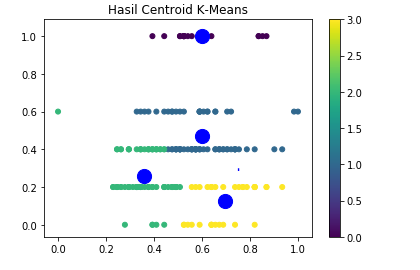

Materi K-mean
Penjelasan k-means clustering¶
Apakah yang dimaksud K-Mean Clustering ?
K-means merupakan salah satu algoritma clustering. Tujuan algoritma ini yaitu untuk membagi data menjadi beberapa kelompok. Algoritma ini menerima masukan berupa data tanpa label kelas. Hal ini berbeda dengan supervised learning yang menerima masukan berupa vektor (x1 , y1) , (x2 , y2) , …, (xi , yi), di mana xi merupakan data dari suatu data pelatihan dan yi merupakan label kelas untuk xi.
Pada algoritma pembelajaran ini, komputer mengelompokkan sendiri data-data yang menjadi masukannya tanpa mengetahui terlebih dulu target kelasnya. Pembelajaran ini termasuk dalam unsupervised learning. Masukan yang diterima adalah data atau objek dan k buah kelompok (cluster) yang diinginkan. Algoritma ini akan mengelompokkan data atau objek ke dalam k buah kelompok tersebut. Pada setiap cluster terdapat titik pusat (centroid) yang merepresentasikan cluster tersebut.
K-means ditemukan oleh beberapa orang yaitu Lloyd (1957, 1982), Forgey (1965) , Friedman and Rubin (1967) , and McQueen (1967). Ide dari clustering pertama kali ditemukan oleh Lloyd pada tahun 1957, namun hal tersebut baru dipublikasi pada tahun 1982. Pada tahun 1965, Forgey juga mempublikasi teknik yang sama sehingga terkadang dikenal sebagai Lloyd-Forgy pada beberapa sumber.
KELEBIHAN¶
Ada beberapa kelebihan pada algoritma k-means, yaitu:
- Mudah untuk diimplementasikan dan dijalankan.
- Waktu yang dibutuhkan untuk menjalankan pembelajaran ini relatif cepat.
- Mudah untuk diadaptasi.
- Umum digunakan.
KEKURANGAN¶
Algoritma k-means memiliki beberapa kelebihan, namun ada kekurangannya juga. Kekurangan dari algoritma tersebut yaitu :
- Sebelum algoritma dijalankan, k buah titik diinisialisasi secara random sehingga pengelompokkan data yang dihasilkan dapat berbeda-beda. Jika nilai random untuk inisialisasi kurang baik, maka pengelompokkan yang dihasilkan pun menjadi kurang optimal.
- Dapat terjebak dalam masalah yang disebut curse of dimensionality. Hal ini dapat terjadi jika data pelatihan memiliki dimensi yang sangat tinggi (Contoh jika data pelatihan terdiri dari 2 atribut maka dimensinya adalah 2 dimensi. Namun jika ada 20 atribut, maka akan ada 20 dimensi). Salah satu cara kerja algoritma ini adalah mencari jarak terdekat antara k buah titik dengan titik lainnya. Jika mencari jarak antar titik pada 2 dimensi, masih mudah dilakukan. Namun bagaimana mencari jarak antar titik jika terdapat 20 dimensi. Hal ini akan menjadi sulit.
- Jika hanya terdapat beberapa titik sampel data, maka cukup mudah untuk menghitung dan mencari titik terdekat dengan k titik yang diinisialisasi secara random. Namun jika terdapat banyak sekali titik data (misalnya satu milyar buah data), maka perhitungan dan pencarian titik terdekat akan membutuhkan waktu yang lama. Proses tersebut dapat dipercepat, namun dibutuhkan struktur data yang lebih rumit seperti kD-Tree atau hashing
ALGORITMA¶
- Pilih K buah titik centroid secara acak
- Kelompokkan data sehingga terbentuk K buah cluster dengan titik centroid dari setiap cluster merupakan titik centroid yang telah dipilih sebelumnya
- Perbaharui nilai titik centroid
- Ulangi langkah 2 dan 3 sampai nilai dari titik centroid tidak lagi berubah
studi kasus k-mean cluster data wisatawan di bali¶
bahan dan langkah-langkah;¶
siapkan tools: python, karna scriptnya memakasi bahasa pyhthon maka wajib makek python selanjutnya APP anakonda dan jupyter (app jupyter ada didalam anakonda), dan Libraries pandas dan siapkan file berintensi CSV atau data exel.
Langkah 1 : Import Libraries.¶
install library pandas dan matplotlib.pyplot di CMD ADMINISTRATOR
pip install pandas
pip install matplotlibPada kasus ini , saya akan menggunakan library pandas, numpy, matplotlib.pyplot, dan sklearn untuk library data science.
#libary
import pandas as pd
import numpy as np
import matplotlib.pyplot as plt
from sklearn.cluster import KMeans
from sklearn.preprocessing import MinMaxScalerLangkah 2 : Import data.¶
#read data
tourist = pd.read_csv('TurisBali.csv')
tourist.head()Langkah 3 : Menghapus label yang tidak di pakai.¶
#drop label
tourist = tourist.drop(['TouristId','MaritalStatus','Gender','TotalChildren','ChildrenAtHome','Education','Occupation','HomeOwner','Cars'], axis = 1)
touristLangkah 4 : Mengelompokkan Data dengan Visualisasi.¶
#visualitation of data
plt.scatter(tourist.Age, tourist.IncomeRange, s = 10, c = 'c', marker = 'o', alpha = 1)
plt.show()Langkah 5 : Menentukan Centroid¶
#define of centroid
tourist_x = tourist.iloc[:, 0:2]
tourist_x.head()#array of data
x_array = np.array(tourist_x)
print(x_array)#distance
scaler = MinMaxScaler()
x_scaled = scaler.fit_transform(x_array)
x_scaledLangkah 6 : menentukan cluster = 4¶
kmeans = KMeans(n_clusters=4, init='k-means++', max_iter=100, n_init=10, random_state=123)
c_kmeans = kmeans.fit_predict(x_scaled)
tourist["Kelas"] = c_kmeans
Langkah 7 : menampilkan hasil cluster¶
print(tourist)
print(kmeans.cluster_centers_)
tourist['kluster'] = kmeans.labels_
Langkah 8 : visualisasi data hasil akhir¶
output = plt.scatter(x_scaled[:,0], x_scaled[:,1], s = 100, c = tourist.kluster, marker = '.', alpha = 1, )
centers = kmeans.cluster_centers_
plt.scatter(centers[:,0], centers[:,1], c='blue', s=200, alpha=1 , marker='o');
plt.title('Hasil Centroid K-Means')
plt.colorbar (output)
plt.show